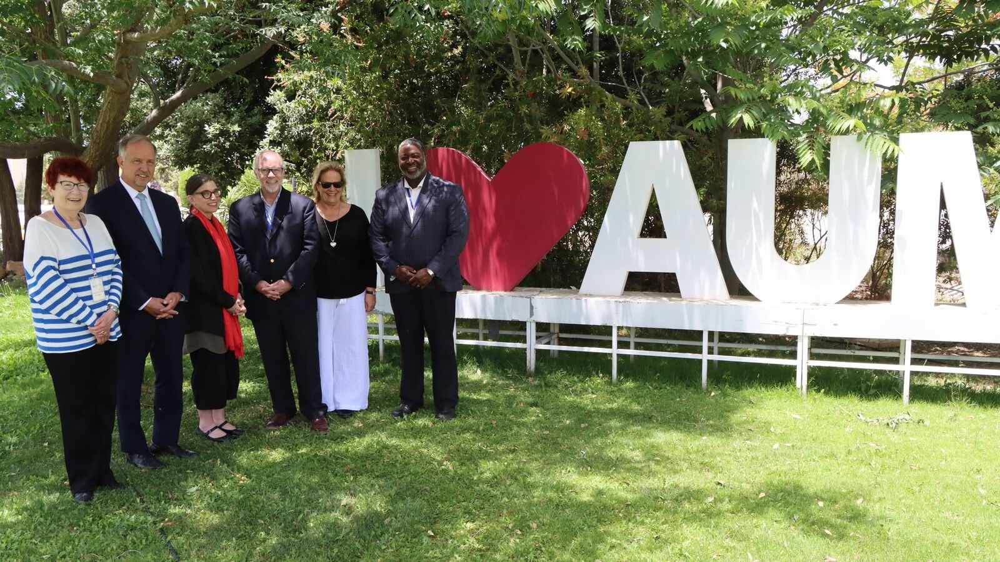
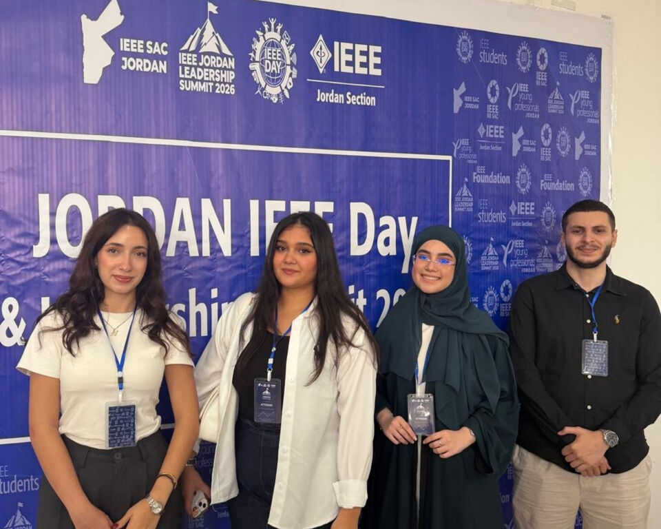
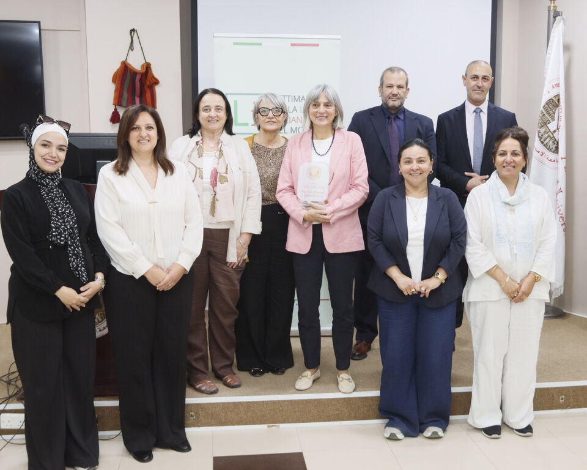
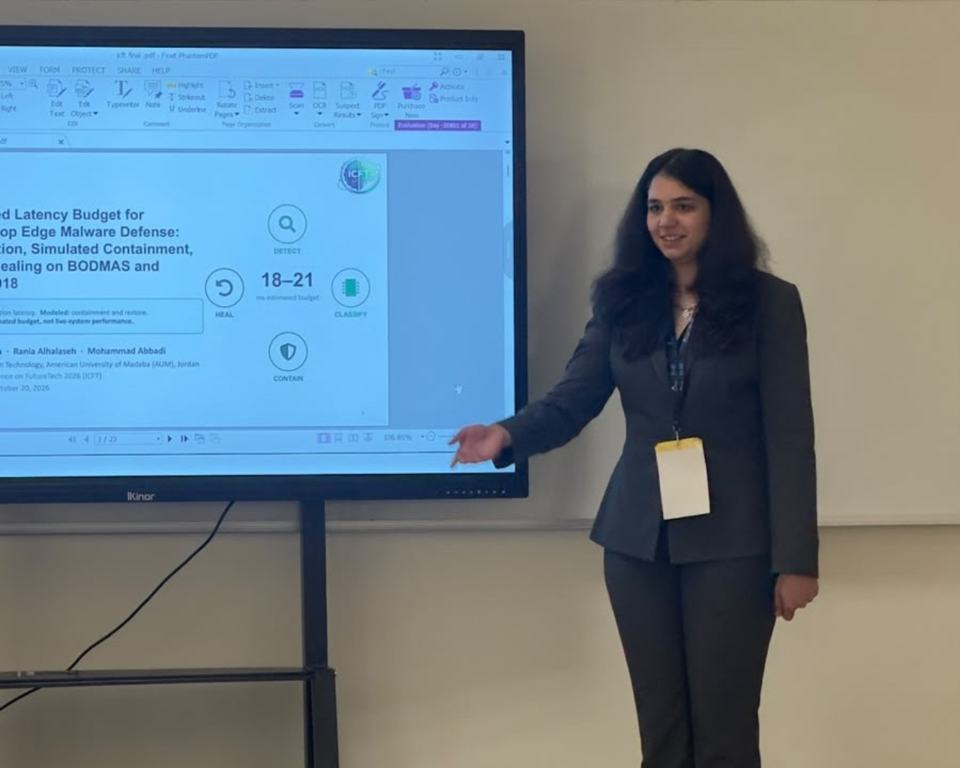
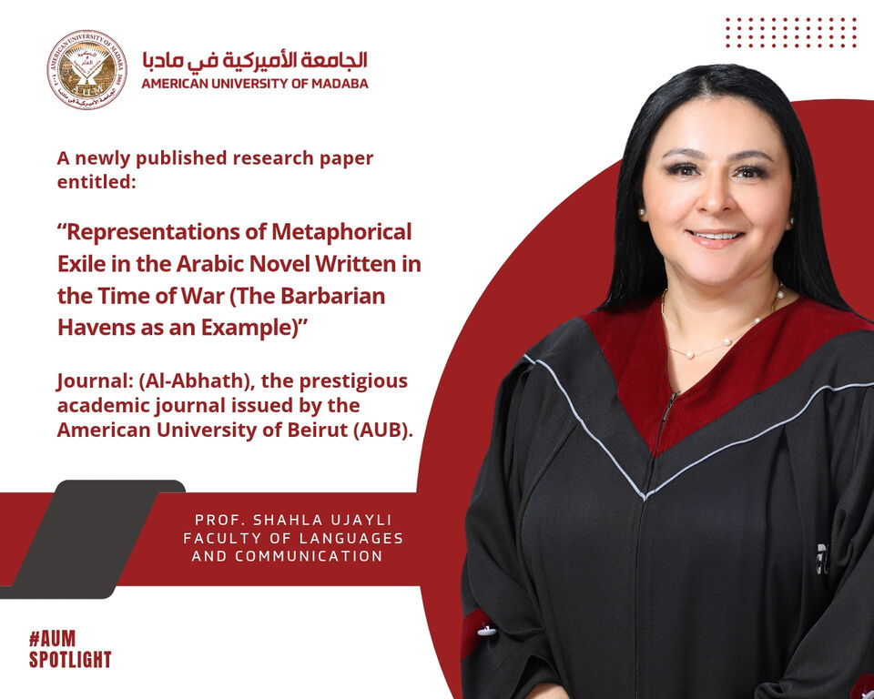

Study, live and grow in Madaba.
Seven faculties taught in English, forty-five minutes from Amman. Everything a student needs, from the programme you choose to the bus you take, in one place.

Your creative career starts here.
Join a vibrant community dedicated to your success. At the American University of Madaba you will find the support, resources and inspiration you need to achieve your dreams.
Apply now →
LatestAUM welcomes the NECHE candidacy evaluation
A comprehensive evaluation visit by a team from the New England Commission of Higher Education, one of the leading accrediting commissions in the United States, with meetings with the Board of Trustees, the President and the Council.
Learn more →Why AUM
The seven things AUM lists first about itself. Each one opens the official page.


Your courses online at elearning.aum.edu.jo.
Opens on aum.edu.jo ↗02Scholarships availablePartial tuition scholarships by Tawjihi average.
Opens on aum.edu.jo ↗03Female student dormHouse of Grace: 88 rooms near campus, opened 2018.
Opens on aum.edu.jo ↗04Study abroad programmeA semester with partner universities in the US, Italy and Lebanon.
Opens on aum.edu.jo ↗05Transportation availableDaily buses from Amman, Zarqa, Fuhais, Karak and Madaba.
Opens on aum.edu.jo ↗06Four-day academic weekClasses are scheduled across four days of the week.
Opens on aum.edu.jo ↗07Registered in the USARegistered in the USA; candidate for NECHE accreditation since 2024.
Opens on aum.edu.jo ↗Faculties and programmes
Choose a faculty or type a name. Open any programme for its details, credit hours and admission average.
Programmes and study plans as published on AUM's department pages (26 October 2026). Fees appear only where AUM publishes them.
Our latest news

Lead storyAUM takes part in IEEE Day celebrations and the Leadership Summit at the Hashemite University
23 October 2026Learn more →More stories

AUM celebrates Italian Language Week with a special cultural session
22 October 2026
AUM master’s student Zelal Mehmetoglu presents cybersecurity research at ICFT 2026
22 October 2026
AUM Spotlight: a newly published research paper by Prof. Shahla Ujayli, Faculty of Languages and Communication, in Al-Abhath, the journal of the American University of Beirut
22 October 2026AUM Spotlight: Dr. Margo Haddad, Faculty of Architecture and Design, appointed Chair of the Documentary Film Jury at the Palestinian Film Festival in Sweden
22 October 2026Welcome day for new students, 21 October 2026.
The Chairman of the Board of Trustees and the President welcomed the new cohort on campus.
The latest moments on campus.
Short videos from the university’s official channels.
Follow usGetting here, living here.
Buses from Amman, Zarqa, Fuhais and Karak
Daily rounds to campus each semester, with a timetable for exam periods.
Learn moreHousing
House of Grace for women near campus; the Student Affairs team helps everyone else find a place in Madaba or Amman.
Learn moreClubs and sport
Debate, psychology and IEEE student branch; football, volleyball and chess championships across the faculties.
Learn moreInternational students
An International Students Office, exchange agreements with partner universities in the US, Italy and Lebanon.
Learn moreThree master degrees and a research deanship.
Master programmes in business analytics, risk management and autonomous cybersecurity, overseen by the Deanship of Scientific Research and Graduate Studies.
Come and see the campus.
A 100-acre campus five miles from the historic centre of Madaba, designed so every indoor and outdoor space is accessible.
Office hours Saturday 9:00 to 15:00 · Monday to Thursday 8:30 to 16:30
Start with the online application.
Opens AUM's online application